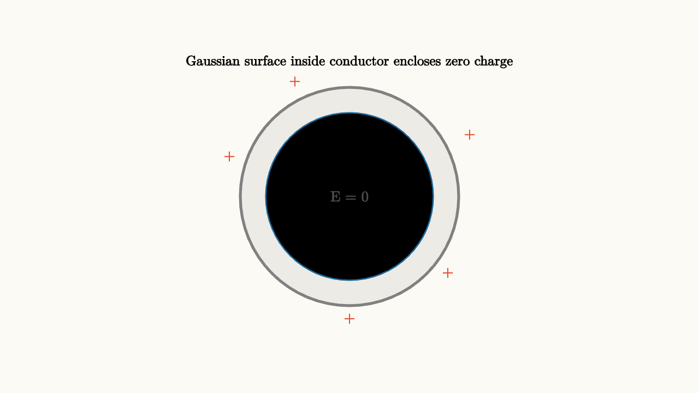

Gauss's Law Counts Field Lines
Here is a surprising fact. To find the electric field of a uniformly charged sphere - an object made of infinitely many tiny point charges, each contributing its own field in a different direction - you don't need to integrate over every piece. You just need to know the total charge. One number. That's it.
To figure out why, you have to stop thinking about forces and start thinking about something called flux.
The Problem with Direct Integration
Suppose you have a spherical shell carrying total charge $Q$ spread uniformly over its surface. A point sits at distance $r$ from the center. What's the electric field there?
Direct approach: divide the sphere into tiny patches, compute the field from each patch at your point, then integrate the vector sum over the whole sphere. Each patch contributes a field pointing in some direction. The contributions don't all point the same way - patches on the left push right, patches on the right push left, patches on the top push down and sideways. The calculation is doable but involves some fairly careful geometry.
Gauss's law makes this obvious. The answer comes from symmetry alone, before you do a single integral.
Flux: Counting How Much Field Passes Through a Surface
The key idea is flux. Think about a flat surface sitting in a field. Some field lines pass through it, some run parallel to it. The flux measures how many field lines actually pierce through the surface.
More precisely, for a small patch of area $dA$ with outward normal $\hat{n}$, the flux through that patch is:
where $\theta$ is the angle between the field and the normal. If the field hits the patch head-on, $\cos\theta = 1$ and all the field passes through. If the field runs parallel to the patch, $\cos\theta = 0$ and no flux gets counted. If the field enters from the back, $\cos\theta$ is negative and that's negative flux.
source
background = [0.985, 0.98, 0.955, 1]
camera = Camera(4.8b)
"introduce a surface and field"
mesh field_arrows = block {
. color{ORANGE} Arrow(start: [-2.5, 0.7, 0], end: [-1.3, 0.7, 0])
. color{ORANGE} Arrow(start: [-2.5, 0.0, 0], end: [-1.3, 0.0, 0])
. color{ORANGE} Arrow(start: [-2.5, -0.7, 0], end: [-1.3, -0.7, 0])
. color{ORANGE} Arrow(start: [0.5, 0.7, 0], end: [1.7, 0.7, 0])
. color{ORANGE} Arrow(start: [0.5, 0.0, 0], end: [1.7, 0.0, 0])
. color{ORANGE} Arrow(start: [0.5, -0.7, 0], end: [1.7, -0.7, 0])
}
mesh surface = stroke{BLUE, 4} Line(start: [-0.4, 1.1, 0], end: [-0.4, -1.1, 0])
mesh normal = color{GREEN} Arrow(start: [-0.4, 0, 0], end: [0.6, 0, 0])
mesh label = center{[-0.4, 1.45, 0]} Text("surface", 0.68)
play Fade(0.7)
"field perpendicular to surface"
mesh caption = center{[0, -1.65, 0]} Text("field perpendicular to surface: maximum flux", 0.68)
play Fade(0.5)
"tilt surface"
surface = stroke{BLUE, 4} Line(start: [0.4, 1.1, 0], end: [-1.2, -1.1, 0])
normal = color{GREEN} Arrow(start: [-0.4, 0, 0], end: [0.35, 0.9, 0])
caption = center{[0, -1.65, 0]} Text("tilted surface: only E cos(theta) component passes through", 0.68)
play Lerp(1.0)To get total flux through a closed surface - a surface that completely encloses some region of space - you add up all the little patch contributions:
The circle on the integral sign means the surface is closed.
The Key Insight: Field Lines Don't Disappear
Here's the geometric argument for why Gauss's law works. Imagine a positive point charge sitting in space. It radiates field lines outward in all directions, like a porcupine made of light. Those field lines keep going forever unless they hit a negative charge.
Now draw any closed surface around the charge - a sphere, a cube, a blobby potato shape, anything as long as it completely encloses the charge. Every single field line from the charge must eventually pierce through your surface and exit. There's nowhere else for them to go.
The total number of field lines exiting the surface equals the total number of field lines coming from the charge. It doesn't matter what shape your surface is. It doesn't matter where the charge sits inside the surface.
source
param radius = 0.85
background = [0.985, 0.98, 0.955, 1]
camera = Camera(4.8b)
let FluxSphere = |radius| block {
. stroke{BLUE, 2.5} center{[0, 0, 0]} Circle(radius)
. fill{alpha{0.22} RED} stroke{RED, 2} center{[0, 0, 0]} Circle(0.16)
. center{[0, 0, 0]} color{RED} Text("+", 0.68)
. color{ORANGE} Arrow(start: [radius * 0.85, 0, 0], end: [radius + 0.55, 0, 0])
. color{ORANGE} Arrow(start: [-radius * 0.85, 0, 0], end: [-radius - 0.55, 0, 0])
. color{ORANGE} Arrow(start: [0, radius * 0.85, 0], end: [0, radius + 0.55, 0])
. color{ORANGE} Arrow(start: [0, -radius * 0.85, 0], end: [0, -radius - 0.55, 0])
. color{ORANGE} Arrow(start: [radius * 0.6, radius * 0.6, 0], end: [radius * 0.85 + 0.38, radius * 0.85 + 0.38, 0])
. color{ORANGE} Arrow(start: [-radius * 0.6, radius * 0.6, 0], end: [-radius * 0.85 - 0.38, radius * 0.85 + 0.38, 0])
}
"small sphere"
mesh title = center{[0, 1.95, 0]} Text("same enclosed charge: same number of field lines exit", 0.68)
mesh scene = FluxSphere(radius: $radius)
play Write(0.8)
"grow the sphere"
radius = 1.55
scene = FluxSphere(radius: $radius)
play Lerp(1.3)
"observation"
mesh note = center{[0, -1.75, 0]} Text("larger sphere: same flux, but spread over more area", 0.68)
play Fade(0.5)As the sphere grows, the arrows at the surface get shorter - the field weakens. But the sphere also gets larger. These two effects exactly cancel. The total flux (field strength times area) stays constant as long as the enclosed charge stays constant.
Gauss's Law: The Formal Statement
That geometric observation becomes the law:
The left side is total outward electric flux. The right side is the enclosed charge divided by the permittivity of free space $\epsilon_0 \approx 8.85 \times 10^{-12}$ C$^2$/(N m$^2$).
The law is profound and general. It works for any closed surface. It works regardless of how the charge is distributed inside. Only the total enclosed charge matters.
A charge sitting outside the surface contributes zero net flux. Why? Because every field line from an outside charge that enters the surface also exits it somewhere else. The in and out contributions cancel exactly.
source
background = [0.985, 0.98, 0.955, 1]
camera = Camera(4.8b)
"charge outside surface"
mesh outside_charge = block {
. fill{alpha{0.22} RED} stroke{RED, 2} center{[2.2, 0, 0]} Circle(0.18)
. center{[2.2, 0, 0]} color{RED} Text("+", 0.7)
}
mesh surface = stroke{BLUE, 2.5} center{[0, 0, 0]} Circle(1.1)
mesh in_arrow = color{ORANGE} Arrow(start: [1.65, 0.4, 0], end: [1.0, 0.25, 0])
mesh out_arrow = color{ORANGE} Arrow(start: [-1.0, -0.25, 0], end: [-1.65, -0.4, 0])
play Fade(0.7)
"label the cancellation"
mesh caption = center{[0, -1.75, 0]} Text("entering and exiting lines cancel: zero net flux", 0.68)
play Fade(0.5)
"swap to box"
surface = stroke{BLUE, 2.5} center{[0, 0, 0]} Rect([2.1, 1.8])
in_arrow = color{ORANGE} Arrow(start: [1.65, 0.4, 0], end: [1.05, 0.4, 0])
out_arrow = color{ORANGE} Arrow(start: [-1.05, -0.4, 0], end: [-1.65, -0.4, 0])
caption = center{[0, -1.75, 0]} Text("shape of surface doesn't matter: same zero net flux", 0.68)
play Trans(0.9)Using Symmetry: Gauss's Law as a Solver
Gauss's law is always true, but it's most useful as a calculating tool when a problem has enough symmetry that you can argue what the field must look like before computing it.
The argument goes like this: if a charge distribution is symmetric in some way, the field must be symmetric in the same way. Then you can design a Gaussian surface where the field is either constant and perpendicular to the surface (making the integral easy) or zero (making that piece contribute nothing).
The charged sphere: For a uniformly charged sphere with total charge $Q$, pick a Gaussian surface that's also a sphere centered on the same center, at radius $r > R$ (outside the sphere). Spherical symmetry demands that the field on this Gaussian sphere must be radially outward and have the same magnitude everywhere on the sphere. So:
Gauss's law says this equals $Q/\epsilon_0$, giving:
This is exactly Coulomb's law for a point charge. A uniformly charged sphere looks like a point charge from the outside. That's the result that would have been painful to get by integration.
Inside the sphere: For a Gaussian surface at radius $r < R$, the enclosed charge depends on how much of the sphere you've captured. If the charge is on the surface only, the enclosed charge for $r < R$ is zero, so the field inside is zero. If the charge is uniformly distributed through the volume, the enclosed charge grows as $r^3$ while the surface area grows as $r^2$, giving a field that grows linearly with $r$ inside.
source
param r_param = 0.5
background = [0.985, 0.98, 0.955, 1]
camera = Camera(4.8b)
let SphereField = |r| block {
. fill{alpha{0.10} ORANGE} stroke{ORANGE, 2} center{[0, 0, 0]} Circle(1.1)
. stroke{BLUE, 2} center{[0, 0, 0]} Circle(r)
. center{[-1.65, 0, 0]} color{ORANGE} Text("Q", 0.72)
. center{[0, -1.85, 0]} Text("blue = gaussian surface", 0.68)
}
"start"
mesh scene = SphereField(r: $r_param)
mesh caption = center{[0, 1.85, 0]} Text("drag Gaussian surface inside and outside sphere", 0.68)
play Write(0.8)
"push outside"
r_param = 1.8
scene = SphereField(r: $r_param)
play Lerp(1.3)An infinite line of charge: Symmetry says the field must point radially away from the line and have the same magnitude at a given distance. Choose a cylinder as the Gaussian surface. The field is parallel to the end caps (contributing nothing) and perpendicular to the curved sides (contributing fully). The calculation gives:
where $\lambda$ is charge per unit length. This field falls as $1/r$ rather than $1/r^2$ - a significant difference from a point charge, and Gauss makes it easy.
Why Charges Live on Conductor Surfaces
Gauss's law has an elegant consequence for conductors. In a conductor at equilibrium, mobile charges have arranged themselves so there's no net force on any of them. If there were a net force, charges would accelerate until they reached equilibrium.
Zero net force on mobile charges inside a conductor means zero electric field inside the conductor.
Now draw a Gaussian surface just inside the conductor's surface, in the conducting material. The field is zero everywhere on this Gaussian surface. So the flux is zero. By Gauss's law, the enclosed charge is zero.
Any excess charge on a conductor must be on its outer surface. There's no other place for it to go and still be consistent with zero field inside.
This is why the inside of a hollow conductor is shielded from external electric fields - a fact used in Faraday cages, in coaxial cables, and in the shielding of sensitive electronics.

source
background = [0.985, 0.98, 0.955, 1]
camera = Camera(4.8b)
mesh conductor = block {
. fill{alpha{0.12} GRAY} stroke{GRAY, 3} center{[0, 0, 0]} Circle(1.5)
. fill{WHITE} stroke{GRAY, 2} center{[0, 0, 0]} Circle(0.85)
. stroke{BLUE, 1.5} center{[0, 0, 0]} Circle(1.15)
. center{[0, 0, 0]} color{DARK_GRAY} Text("E = 0", 0.72)
. center{[0, 1.85, 0]} Text("Gaussian surface inside conductor encloses zero charge", 0.68)
. center{[1.65, 0.85, 0]} color{RED} Text("+", 0.72)
. center{[1.35, -1.05, 0]} color{RED} Text("+", 0.72)
. center{[-0.75, 1.58, 0]} color{RED} Text("+", 0.72)
. center{[-1.65, 0.55, 0]} color{RED} Text("+", 0.72)
. center{[0, -1.68, 0]} color{RED} Text("+", 0.72)
}
"charge on surface only"
play Fade(0.7)The Deep Geometry Behind the Law
There's something profound happening here that goes beyond electrostatics. Gauss's law is not just an experimental fact about how charges behave. It follows from the geometric structure of three-dimensional space.
The $1/r^2$ dependence of Coulomb's law is not an accident. In three dimensions, the surface area of a sphere grows as $r^2$. If field lines never terminate (no charges), they must spread over growing spheres, which forces the field to weaken as $1/r^2$. Any other power law would violate the conservation of field lines.
Gauss's law encodes this geometry in a single equation. It says: count the field lines exiting a surface, and you've counted the sources inside. The shape of the surface is irrelevant because field lines go straight through any surface without terminating unless they hit a charge.
This geometric perspective becomes even more powerful in the full Maxwell's equations. Gauss's law for magnetic fields says magnetic flux through any closed surface is zero - because there are no magnetic charges where field lines begin or end. Magnetic field lines always close on themselves in loops.
The Lesson
Gauss's law is a flux equation: net outward electric field through any closed surface equals enclosed charge divided by $\epsilon_0$. It is always true, derived from the geometry of how a $1/r^2$ field spreads through three-dimensional space.
It becomes a powerful calculating tool when symmetry constrains the field to be constant and perpendicular on a carefully chosen surface. Spheres, cylinders, and flat slabs all yield to this treatment. The insight in each case is the same: let symmetry tell you the field's direction and variation, then use Gauss's law to fix its magnitude.
And it reveals something physical: charge outside a closed surface cancels. Charge inside determines the total flux. Field lines from outside always exit as cleanly as they enter.